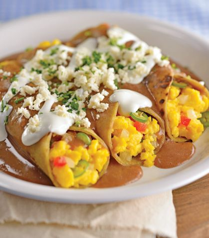

Desayunos Rápidos ☕ | Ideas fáciles y saludables | BABYCOCINA
2021.06.20 21:17
https://babycocina.com Acceder Register Recetas Recetas BABYCOCINA Batidos y Zumos Carnes Ensaladas y Verduras Pastas y Arroces Pescados y mariscos Pizzas, Pan y Masas Sandwiches y Bocadillos Sopas, cremas y purés Tartas y Postres Recetario Intolerancias Sin Lactosa Sin Gluten Sin Leche Sin Huevo Por Edad A partir de 6 meses A partir de 9 meses A partir de 12 meses A partir de 18 meses Recetario Temático Semana Santa Fiestas Infantiles BLW 1️⃣ MENÚ 1 Apto BLW 2️⃣ MENÚ 2 Apto BLW 👶 Primeros Alimentos BLW 🚫 Alimentos Prohibidos BLW 🍽️ Recetas BLW ⬅️ 🚼 Infografía BLW 🔪 Cortes BLW 📚 Libros BLW 🛒 Baberos BLW 🧼 Limpieza BLW BLOG 👉 SÍGUENOS en Youtube PODCAST ENVIAR RECETA Recetas Recetas BABYCOCINA Batidos y Zumos Carnes Ensaladas y Verduras Pastas y Arroces Pescados y mariscos Pizzas, Pan y Masas Sandwiches y Bocadillos Sopas, cremas y purés Tartas y Postres Recetario Intolerancias Sin Lactosa Sin Gluten Sin Leche Sin Huevo Por Edad A partir de 6 meses A partir de 9 meses A partir de 12 meses A partir de 18 meses Recetario Temático Semana Santa Fiestas Infantiles BLW 1️⃣ MENÚ 1 Apto BLW 2️⃣ MENÚ 2 Apto BLW 👶 Primeros Alimentos BLW 🚫 Alimentos Prohibidos BLW 🍽️ Recetas BLW ⬅️ 🚼 Infografía BLW 🔪 Cortes BLW 📚 Libros BLW 🛒 Baberos BLW 🧼 Limpieza BLW BLOG 👉 SÍGUENOS en Youtube PODCAST ENVIAR RECETA Home Pizzas, Pan y Masas Desayunos Rápidos ☕ | Ideas fáciles y saludables
Desayunos Rápidos ☕ | Ideas fáciles y saludables ¿No tienes tiempo para mucho? Te damos ideas de desayunos rápidos
Comparte 96.637 Vistas Me gusta 163 10 min Raciones 1 Fácil (1)Compártelo en tu red social:
O simplemente puedes copiar y compartir esta urlAñadir a Recetario
You need to Login or Register to bookmark/favorite this content.
Tazas Medidoras ¡Olvídate de equivalencias!
Bestseller No. 1 Kitchen Craft Cucharas y Tazas medidoras de Plástico, 10 Unidades 5,08 EUR Comprar Bestseller No. 2 Ipow Juego de 5 Cucharas Medidoras de Acero Inoxidable, Taza de Medición con Manilla Silicona para Cocina y Hogar 9,99 EUR Comprar Rebajas Bestseller No. 3 Juegos de 10 Cucharas Medidoras Plástico Cucharas y Tazas Medidoras Multicolor Medidoras de Cocina Medidoras Reposteria Apto para lavavajillas 10,99 EUR 6,99 EUR ComprarDesayunos rápidos para empezar el día sin estrés y de forma saludable
Elaboración
ComparteHoy quiero darte ideas de desayunos rápidos para que puedas organizarte tu semana de trabajo, estudios, etc. Todas las recetas que te propongo son express, pero te aconsejo que planifiques tu compra para que tengas en tu despensa todos los ingredientes que vas a necesitar para empezar la mañana con energía.
El desayuno es una de las comidas más importantes del día, y es que, este debe ofrecer entre un 20% y un 25% del total de calorías diarias al organismo.
La mayoría de las recetas de desayunos rápidos que vas a ver hoy se elaboran con ingredientes básicos, pero es conveniente que te hagas con semillas y frutos secos variados o chips de chocolate y coco ; estos últimos harán que los desayunos propuestos, además de rápidos, sean saludables y nutritivos, ¿se puede pedir más?
¿Estás a dieta? Mira nuestros desayunos para perder peso .
¿Qué te contamos por aquí?
1 Desayunos rápidos y saludables 1.1 Torta de trigo con pavo y huevo 1.2 Tortitas de avena y cacao 1.3 Tostada integral de aguacate 2 Crepes para desayunos rápidos y sanos 3 Desayunos rápidos al microondas 3.1 Magdalenas rápidas para desayunar 3.2 Bizcocho express al microondas 4 Pancakes para desayunos rápidos 5 Desayuno rápido americano para tener un día 10 6 Batidos rápidos y sanos para desayunar 7 Desayunos Gourmet 7.1 Aguacate al horno con huevos de codornizDesayunos rápidos y saludables
Desayunos rápidos y saludables, ¿es posible?Si buscas desayunos rápidos y saludables comparto contigo algunas de las mejores opciones: sin azúcar, sin grasas e ideales para comenzar el día con buen pie .
Torta de trigo con pavo y huevo
Ingredientes:
1 huevo 2 lonchas de pavo 1 tortita de trigoElaboración:
Bate el huevo e incorpóralo a una sartén caliente. Remueve hasta formar un revuelto y aparta del fuego. Pon dos lonchas de pavo y el huevo revuelto en el centro de la tortila. Enróllala y disfruta de este desayuno en unos pocos segundos.Tortitas de avena y cacao
Ingredientes :
1 taza de leche vegetal. 1 taza de harina de avena. 1/2 cucharadita de cacao puro en polvo. 2 cucharaditas de levadura. 1/2 cucharadita de aceite de oliva.Elaboración :
Mezcla la leche y el aceite. Agrega la harina, el cacao y la levadura y bate hasta que queden integrados todos los ingredientes. En una sartén a fuego medio alto, echa una cucharada colmada de la mezcla y cocina unos segundos por ambos lados. Repite hasta acabar con la masa. En unos minutos tendrás a tu alcance uno de los desayunos más rápidos y saludables que puedas tomar cada mañana.Tostada integral de aguacate
Ingredientes:
1 aguacate 1 huevo 1 tostada integralElaboración:
Tosta y unta el pan con la pulpa del aguacate. Si no te gusta o no tienes pan integral puedes utilizar cualquier tipo de pan. Escalfa el huevo y colócalo por encima del aguacate. Si lo prefieres, puedes preparar este desayuno con un huevo frito. Los batidos de fruta también son una excelente opción y son muy rápidos de hacer . Si te animas a sustituir tu primer café del día, no dudes en incorporarlos a tu desayuno diario.Crepes para desayunos rápidos y sanos
Crepes rápidos para desayunosLos crepes son unas tortas blandas que se elaboran a base de harina. Existen muchas recetas y todas ellas te servirán para tener un desayuno en apenas unos minutos . Puedes acompañarlos de fruta, de algún tipo de crema, como crema de cacahuetes o de avellana, o también puedes untarlos en mermelada, ¡conseguirás desayunar en tiempo record!. Mira nuestras recetas de masa de crepes básica y crepes de manzana y nueces .
Desayunos rápidos al microondas
Los muffins y las magdalenas se hacen en unos 30 minutos, pero dependiendo las prisas que tengas, media hora puede parecerte demasiado tiempo. En este caso, voy a compartir dos recetas para desayunar rápidas en las que podrás hacer unos 6 muffins o un bizcocho pequeño en tan solo 5 minutos y al microondas.
Si eres celíaco, tenemos a tu disposición unas cuantas recetas de magdalenas sin gluten .
Magdalenas rápidas para desayunar
Ingredientes :
75 gr Aceite de Girasol. 75 ml Leche. 90 gr Azucar. 1 Huevo. 150 gr Harina. 8 gr Levadura. Una pizca de canela. Un chorro de limón (opcional). 1 puñado de semillas, uvas pasas, frutos secos o chips de chocolate (opcional y recomendable).Elaboración :
Añade el huevo, el aceite y la leche a un bol y remueve. Incorpora el azúcar, la harina y la levadura y mezcla hasta que quede una masa homogénea y sin grumos. Añade un chorro de limón y si quieres, unos frutos secos, chips de chocolate, o simimilar. Reparte la masa en los moldes (deben ser aptos para microondas). Lleva al microondas en tandas de 3 muffins y cocina a 700W durante 2 minutos. Saca y espolvorea con una mezcla de azúcar y canela. Vuelve a meter en el microondas a 700W por 1 minutos y 30 segundos.Bizcocho express al microondas
Ingredientes :
3 cucharadas de harina de avena. 1 huevo. 4 claras de huevo. 1 cucharadita de queso fresco batido. 1 cucharadita de cacao en polvo puro. ½ sobre de levadura.Elaboración :
Bate el huevo y las claras a punto de nieve. Agrega la harina y la levadura poco a poco. Incorpora el queso batido y el chocolate. Mezcla todo con movimientos envolventes. Vierte la mezcla en un recipiente y mételo al microondas a 700W durante 4-5 minutos.Pancakes para desayunos rápidos
Los pancakes son tortas que podrás elaborar en un plis plas. Mi recomendación para desayunos express son los pancakes de plátano y los pancakes de cereales y arándanos ; ideales para un desayuno rápido y nutritivo para toda la familia.
Otro de los desayunos rápidos que te propongo son los dorayakis , una especie de torta abizcochada ideal para mojar en café y que también podrás rellenar a u antojo. También puedes elaborar barritas de muesli que estarán hechas en 20 minutos, el tiempo que tardas en vestirte o en darte una ducha, o un pan tumaca , elaborado con pan, jamón, tomate y aceite.
Desayuno rápido americano para tener un día 10
El típico desayuno americano tiene fama internacional y su elaboración en sencilla y rápida. Pese a que hay tantas versiones como americanos, todos sabemos que no pueden faltar los huevos, el tocino o beicon en lonchas y unos buenos panqueques .
Ingredientes :
3 huevos. 100 g de tocino o bacon en lonchas. ½ taza de leche. Media taza de harina. 2 cucharadas de azúcar. 2 cucharaditas de mantequilla. Sal y pimienta.Elaboración:
Para hacer los panqueques mezcla un huevo, la leche, el azúcar y una cucharadita de mantequilla. Agrega poco a poco la harina mientras remueves hasta conseguir una pasta homogénea. Pon al fuego una sartén con la otra cucharadita de mantequilla y una vez caliente, agrega una cucharada de masa. Deja cocinar hasta que aparezcan burbujas sobre la superficie . Dales la vuelta y cocina por el otro lado. Repetir hasta acabar la masa e ir reservando los panqueques. En otra sartén cocina las lonchas de tocino hasta que estén doradas y crujientes. Reserva.Por último fríe unos huevos con una pizca de sal. Sirve los huevos, el tocino y los panqueques en forma de torre. Los panqueques puedes acompañarlos con miel, mermelada, sirope, chocolate, etc.
Batidos rápidos y sanos para desayunar
Desayunos rápidos y fácilesComo no podía ser de otra manera, los batidos son una excelente opción para tener un desayuno listo en tan solo unos segundos. Sus opciones son infinitas, pero me gustaría proponerte especialmente nuestro batido de aguacate , un desayuno rápido, completo y nutritivo donde los haya.
Desayunos Gourmet
Desayunos gourmet: empieza el día con inspiración.No hay nada como empezar el día con un bocado delicado y sabroso. Los desayunos gourmet no son incompatibles con las prisas diarias; si lo tuyo es desayunar como un auténtico rey, estas ideas te sorprenderán.
Aguacate al horno con huevos de codorniz
Aguacate con huevos de codorniz, un verdadero desayuno gourmetIngredientes :
1 aguacate maduro. 2 huevos de codorniz. Un puñado de tacos de jamón cocido o bacon. Brotes de berro. Queso rallado (el que más te guste). Sal y pimienta al gusto.Elaboración :
Precalienta el horno a 180º C. Corta el aguacate por la mitad y retira el hueso . Coloca cada uno de los huevos en el espacio que ocupaba el hueso. Salpimenta al gusto y hornea por 15 minutos. Transcurrido el tiempo, incorpora los tacos de jamón cocido y el queso rallado. Hornea durante 5 minutos más. Sirve con unos brotes de berro frescos .¿Te has gustado mis propuestas de desayunos rápidos? ¿Te han parecido fáciles de hacer? Espero que te hayan gustado y lo más importante, que te hayan ayudado a empezar el día con energía y vitalidad.
2 Comentarios Jessica Pecellín
Jessica Pecellín
Feb 4th, 2020 Jessica PecellínEscritora, autodidacta, emprendedora y feliz ama de casa. Educo en casa a mis cuatro hijos y me apasiona la creación de páginas webs y el mundo de la cocina. Adoro vivir en mitad de la naturaleza.
Comentarios de Receta
Puntuación: (5) Opiniones Totales: 1 Jessica Pecellín 4 febrero, 2020 1 2 3 4 5
Que no te coja el toro disfruta de nuestras recetas de desayunos rápidos.
Cerrar Accede a tu cuenta para escribir una opinión ¿Olvidó su contraseña? Anterior Variat Mallorquín | Receta con 3 TAPAS Siguiente Muffins de avena | 🧁 ¡Deliciosos! Anterior Variat Mallorquín | Receta con 3 TAPAS Siguiente Muffins de avena | 🧁 ¡Deliciosos!Recetas Relacionadas:
Desayunos Recetas con avena Recetas MEXICANAS 🇲🇽 | 8 Recetas tradicionales de México ¡Picantes y Suaves! Infusión Cola de Caballo | 🌱 Potente Diurético Natural KOMBUCHA | Qué es, Cómo preparar y Propiedades del té de kombucha Infusión de Jengibre Gel & Champú para niños 🧼🚿2 Comentarios Ocultar Comentarios
Consuelo dice: 15 mayo, 2020 a las 12:46 pmMe encanto me gustaría que me ayuden con orientarme para comer saludable para subir un poquito de peso y no comer mal
Responder Vivian Fernandez dice: 31 mayo, 2021 a las 1:56 pm
Muchas gracias por estos desayunos, siempre me quedo sin ideas y termino comiendo lo mismo. Me ha encantado el artículo
Añade tu Comentario Cancelar la respuesta
Política de Privacidad Aviso Legal Funcionalidades BABYCOCINA Contacto RSS Post PatrocinadosBABYCOCINA | TODOS LOS DERECHOS RESERVADOS | © 2021
